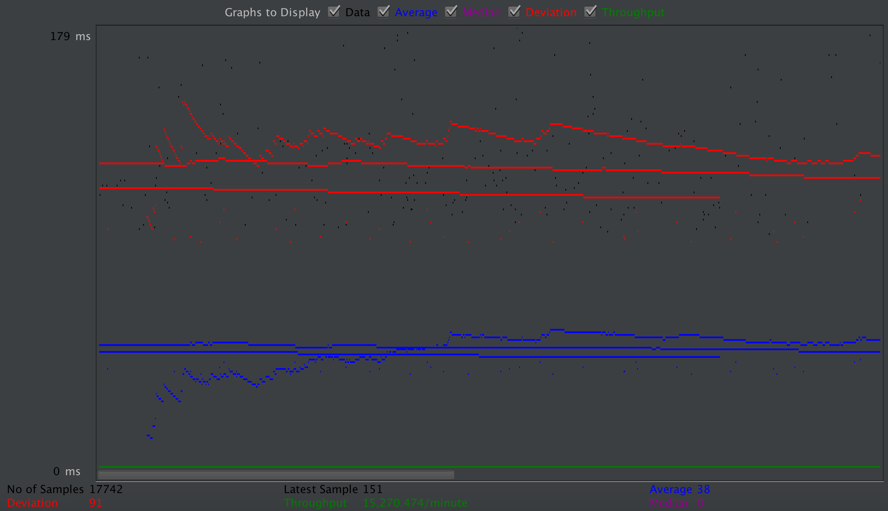
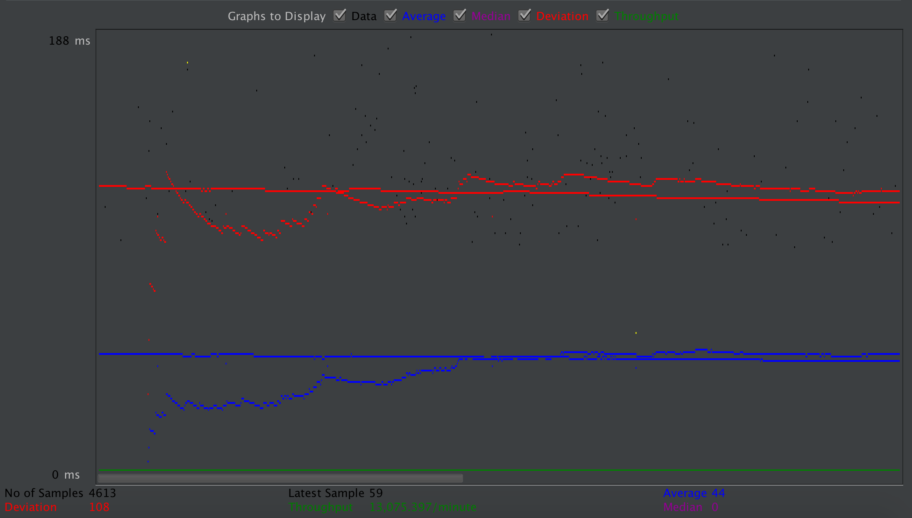
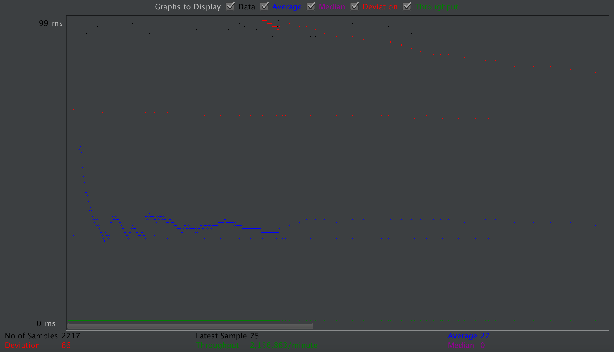
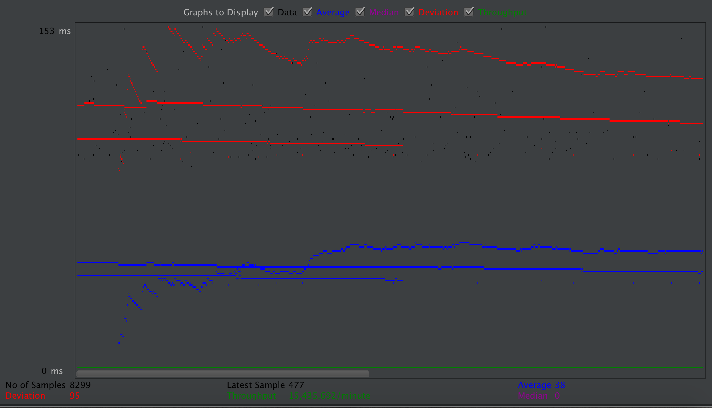
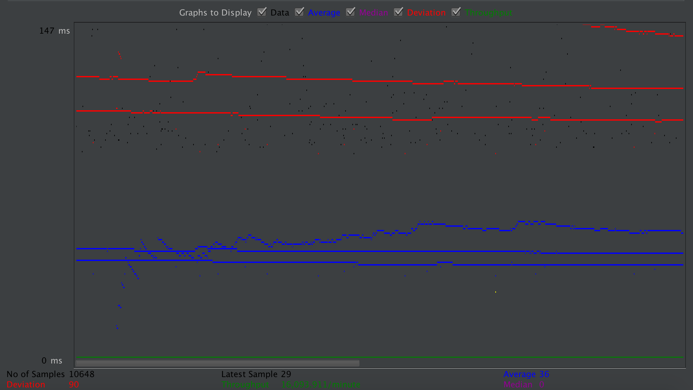
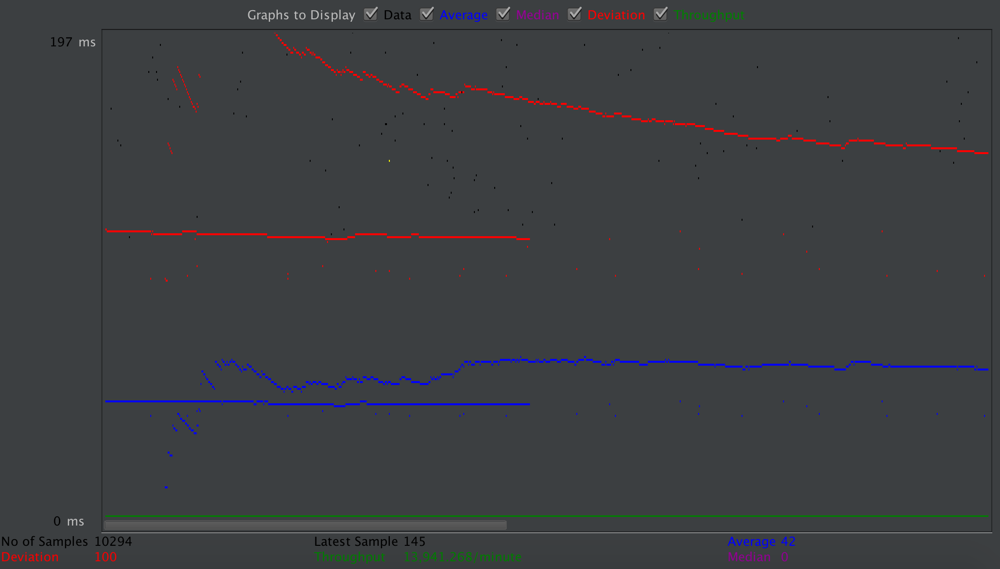
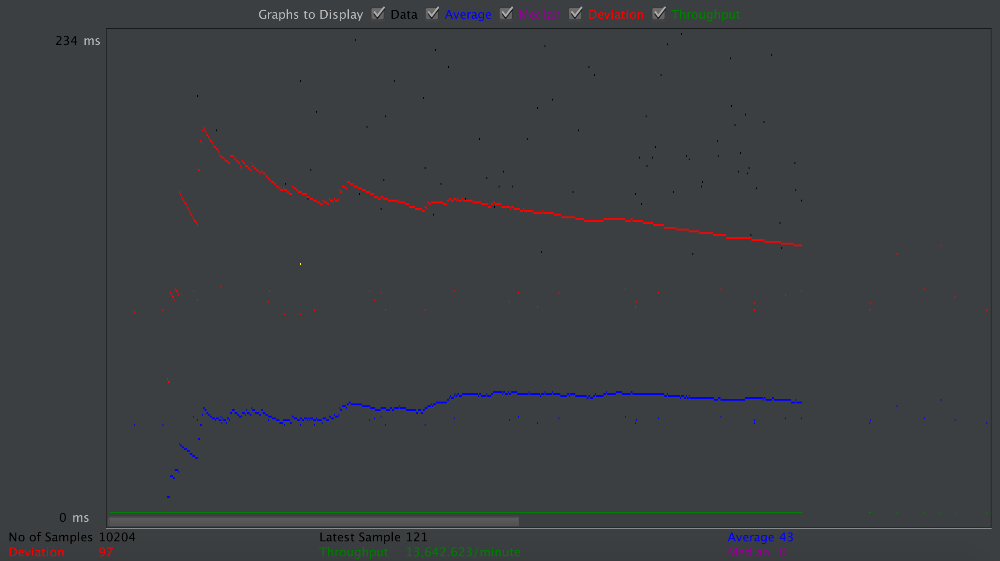
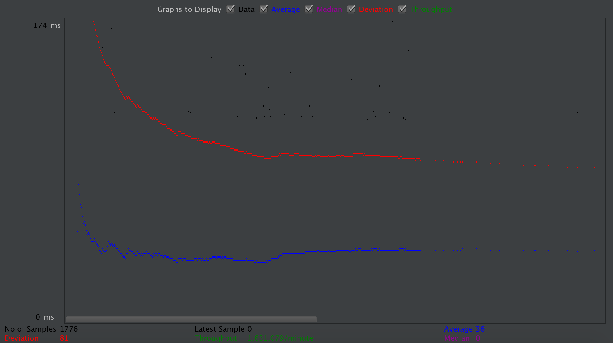
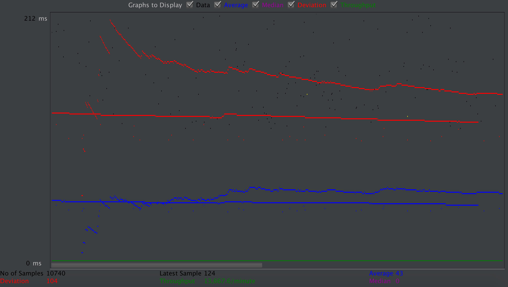

| Single-instance version cases | Graph Results Screenshot | Average Query Time(ms) | Average Search Servlet Time(ms) | Average JDBC Time(ms) | Analysis |
| Case 1: HTTP/1 thread |  | 38 | 65.4 | 22.1 | 10 Threads without prepared statements get worse results compared to case 4 and 5 |
| Case 2: HTTP/10 threads |  | 44 | 99.4 | 30.1 | 10 Threads without connection pooling get worst results among the 5 result, the time to create a new connection cost much |
| Case 3: HTTPS/10 threads |  | 27 | 14.5 | 5.2 | just 1 thread cost few |
| Case 4: HTTP/10 threads/No prepared statements |  | 38 | 49.8 | 10.0 | compared wtih case 5, there is only tiny difference |
| Case 5: HTTP/10 threads/No connection pooling |  | 36 | 49.7 | 9.8 | compared wtih case 4, there is only tiny difference |
| Scaled version cases | Graph Results Screenshot | Average Query Time(ms) | Average Search Servlet Time(ms) | Average JDBC Time(ms) | Analysis |
| Case 1: HTTP/1 thread |  | 42 | 77.3 | 51.3 | slightly worse compared with single instance |
| Case 2: HTTP/10 threads |  | 43 | 81.5 | 60.8 | without the connection pooling get the worst case again |
| Case 3: HTTP/10 threads/No prepared statements |  | 36 | 36.9 | 25.9 | compare to the sigle instance, the case is worse, the reason maybe the overhead of the connection betweent the server and database and load balancer |
| Case 4: HTTP/10 threads/No connection pooling |  | 43 | 77.2 | 50.7 | for 10 threads the case is almost the same with the single instance. the overhead effect is weakened. |